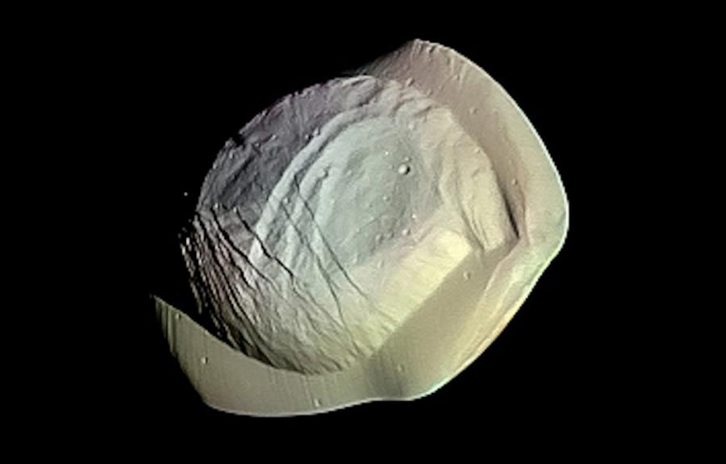

Планета Kepler 62f имеет своего оранжевого карлика, который освещает ее и находится примерно в 1200 световых годах от нас.
Он холоднее Солнца, поэтому на самой планете довольно прохладно: средняя температура там составляет около -30 градусов Цельсия.
За счет относительно стабильного климата ученые считают, что под ледяной коркой этой планеты скрыт океан, который по своим размерам можно сравнить с Европой.
Плюс там очень красивые ночные виды, ведь в небе постоянно сияет аналог нашей Венеры — Kepler-62e. Планета проходит орбиту за 267 дней, что меньше года на Земле.
Что ж, зато новый год можно будет отмечать чаще. Правда, сначала придется до туда добраться.
